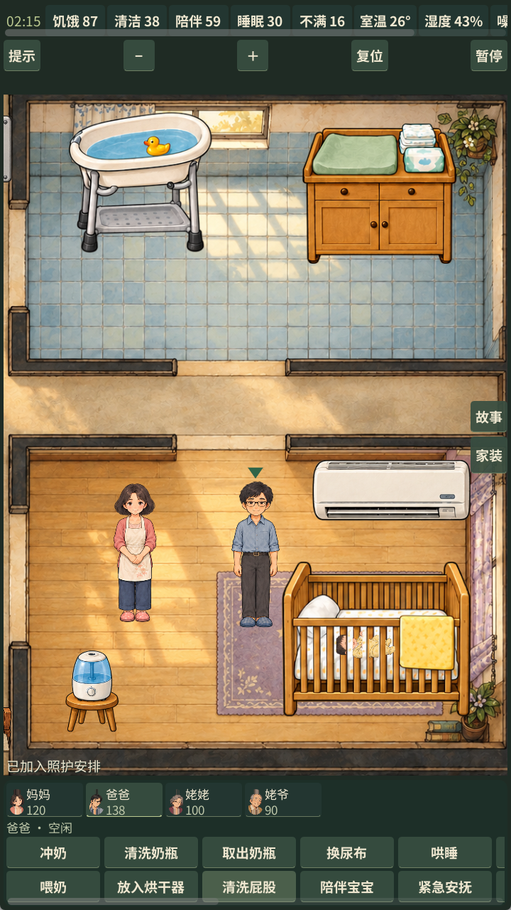
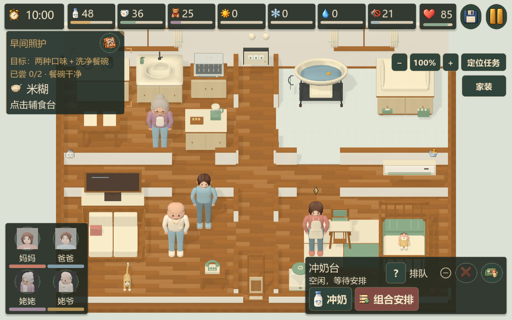
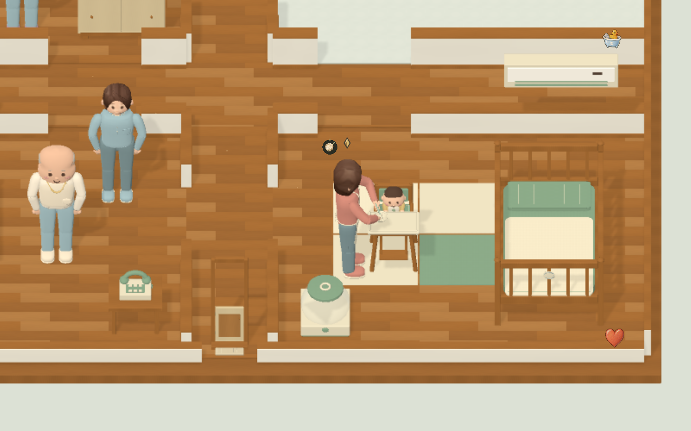
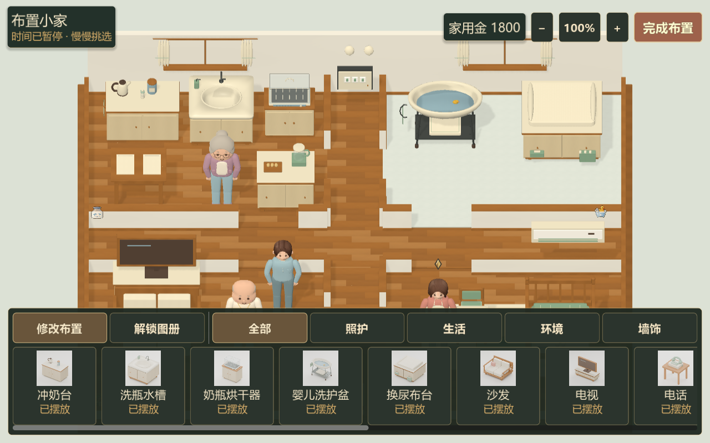

奶瓶有自己的照护顺序
冲奶、喂养、清洗和烘干依次发生。宝宝和正在使用的设备一次只能交给一位家人。安排一个人喂奶时，另一位可以准备下一步或恢复体力。
TAPTAP MAKER / 个人 AI 游戏实践
家庭照护 / 角色调度 / 生活模拟
宝宝快到饭点，奶瓶还没洗，家里又来了工作电话。切到爸妈或祖辈，安排谁抱娃、谁准备下一餐、谁先喘口气。

TapTap 2D 试玩 · Windows 3D 开发实录
先和爸妈学会冲奶、喂养和洗护，再调度全家应对辅食、工作来电与家庭分歧。单日、三日、十五日和无尽挑战提供不同的照护长度，多局积累的经验可以用来学习家庭能力。
2D 画面来自 TapTap 公开游戏页，保留平台原有文案。3D 照护画面见下方 Windows 开发实录。
冲奶、喂养、清洗和烘干依次发生。宝宝和正在使用的设备一次只能交给一位家人。安排一个人喂奶时，另一位可以准备下一步或恢复体力。
左上角显示当前目标，点头像切换并跟随家人，点空地发出移动指令。选中宝宝或家具后，行动按钮会显示可以做的事。

家具按用途分组，可以试移和旋转。摆放重叠或不合适时有提示，确认后才应用布局，再回到照护。
点击图片可查看原图。

以下画面采自 Windows 试验版 0.34.4 的运行验收，展示照护、家装和成长界面。点击可放大查看。





TAPTAP / 游戏入口
前往 TapTap 体验 2D 版，当前可玩版本及支持设备以游戏页为准。